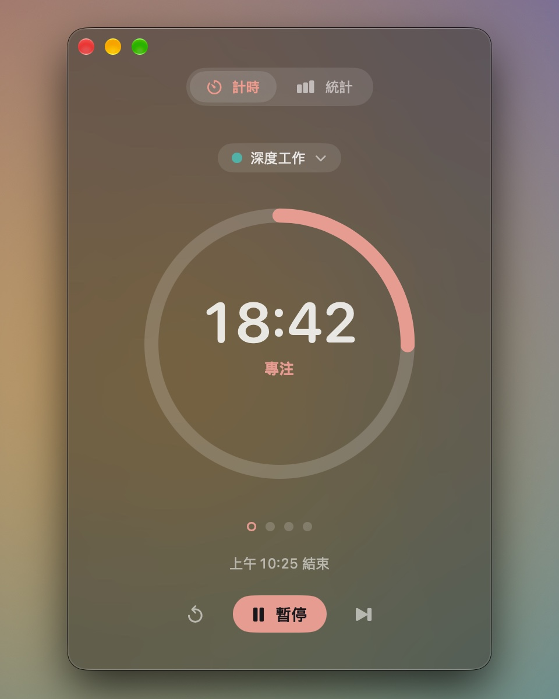
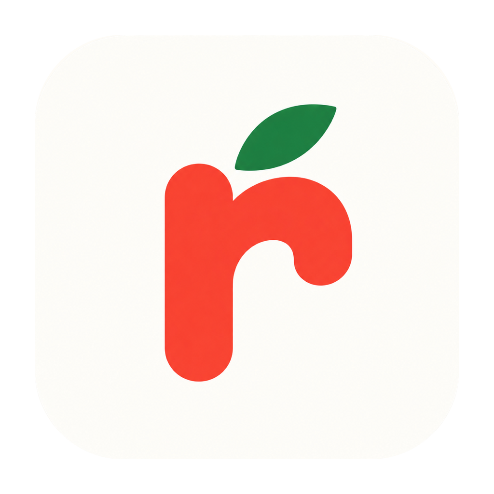
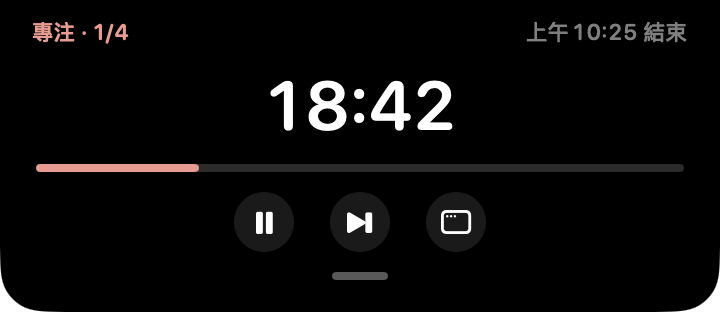
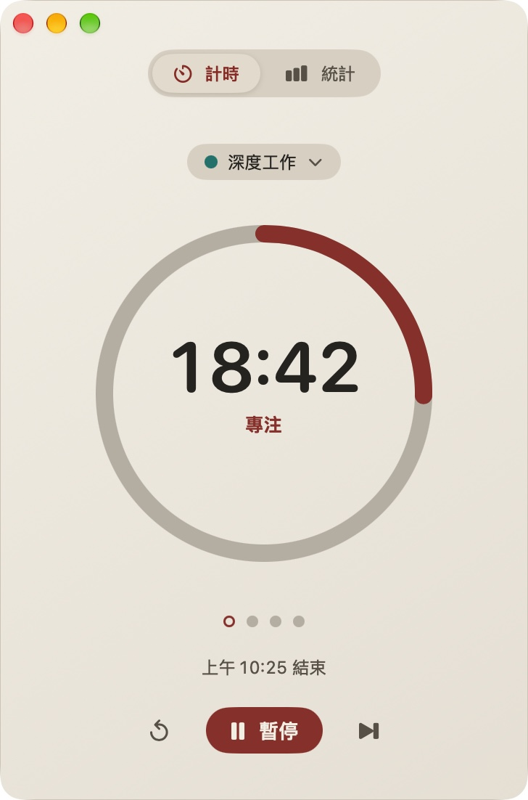
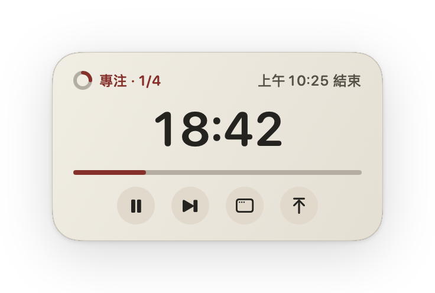
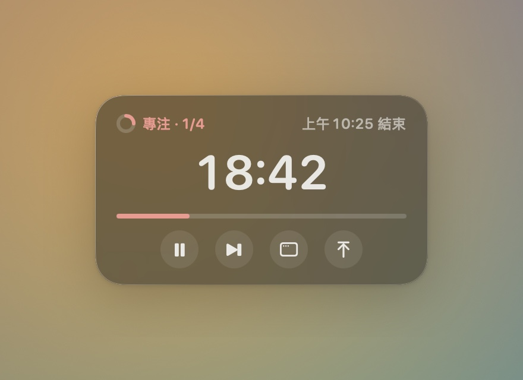
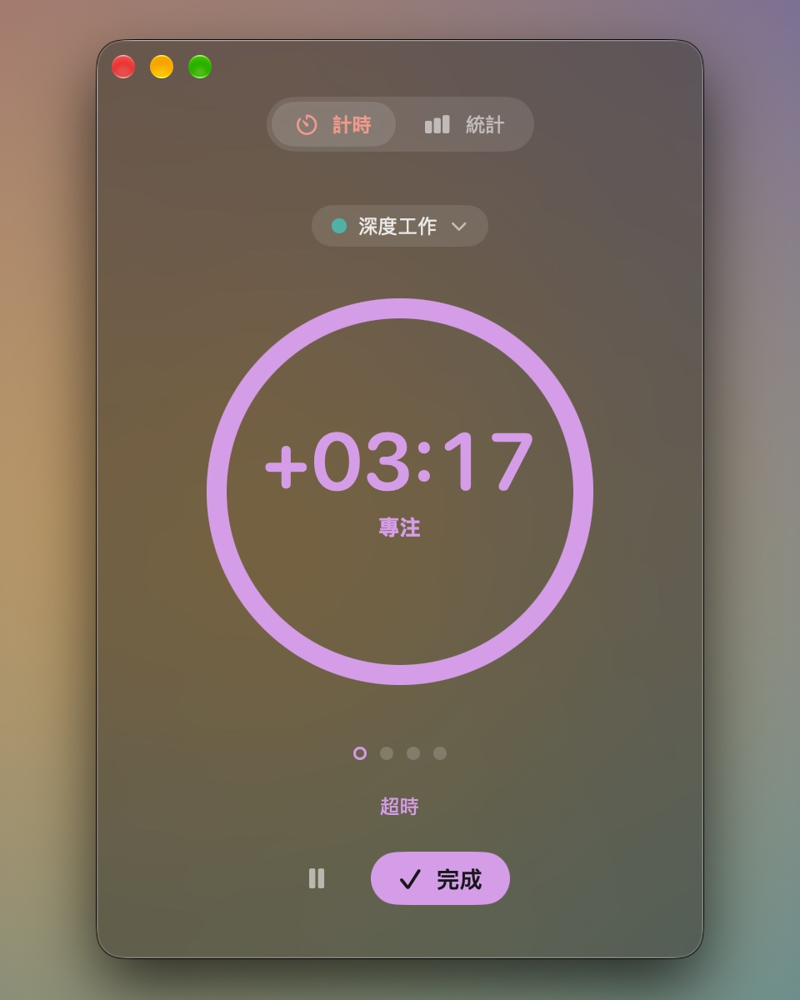
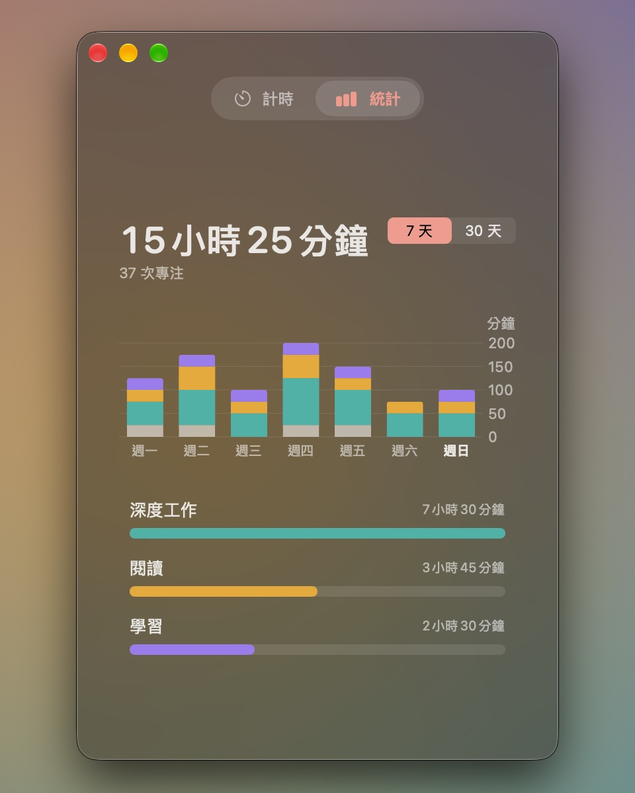
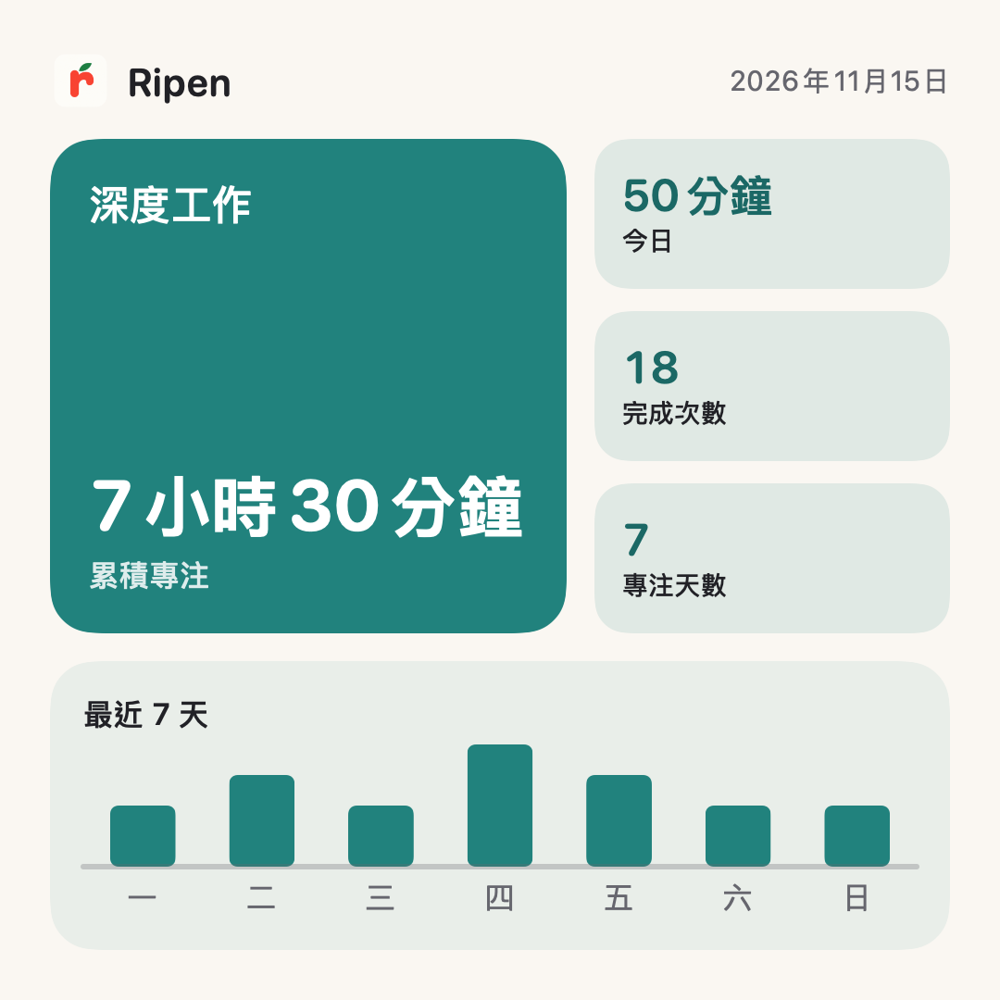
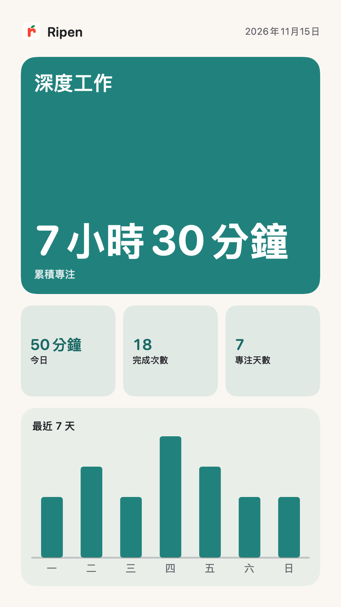

主視窗
完整控制，安靜地陪你開始。

Ripen給 Mac 的專注小工具
時間留在視線裡，注意力留給手上的事。
免費下載 macOS 版免費・開源・不需帳號
macOS 14 以上・未經 Apple 公證，第一次打開要手動允許一次。



需要時就在眼前，忙起來就退到一旁。
同一個計時，三種相處方式。

完整控制，安靜地陪你開始。

永遠置頂，三種尺寸，記得你放的位置。
移入展開控制，往下拉回主視窗。沒有瀏海也能用。

給還沒寫完的那一句。
提示音響起後，Ripen 會換個顏色，繼續往上計時。把這個想法寫完，準備好了，再按「完成」。
專注紀錄會算進超時的長度；鎖定或睡眠期間的超時不會持續累加。
工作、閱讀，或正在學的新事物。把專注分給不同分類，看看這一週，時間花在哪裡。
切換最近 7 天或 30 天，看專注了多久、時間花在哪些分類。點進分類，看它累積了多少。



一個分類，一張成果卡。把持續投入的時間，存成自己看得見的成果。
選方形或直式，存成圖片、複製，或透過系統分享選單傳出去。
畫面中的分類與專注紀錄為展示資料。
不用註冊、不需要帳號。專注紀錄保存在你的 Mac，不用把一天交給另一個雲端服務。
調整專注、短休息與長休息的時間。用全域快速鍵開始或暫停，手不用離開鍵盤。
跳過、重設與完成之後 5 秒內，按倒數膠囊或 ⌘Z 就能復原。
備份專注紀錄與分類，到新 Mac 還原；也能把完成的專注匯出成 CSV。
免費使用，不需要帳號。
下載後打開 DMG，將 Ripen 拖進「應用程式」。
brew install --cask latteine1217/tap/ripenRipen 未經 Apple 公證，第一次打開會被 Gatekeeper 擋下。允許一次之後，就能正常雙擊打開。
安裝後可從 App 選單手動檢查更新。
可以。目前 Mac 版免費使用，沒有試用倒數，也不用先付款。Ko-fi 是自願支持，不會影響你使用 App。
可以。瀏海島會顯示在螢幕頂端中央；你也可以使用主視窗或置頂懸浮窗。
不會，紀錄保存在你的 Mac。目前沒有跨裝置同步。App 只有在你按「檢查更新」時才會連網查詢與下載版本。
目前只有 Mac 版，手機與手錶版尚未提供。
如果 Ripen 讓你的工作日順了一點，可以透過 Ko-fi 自願支持（另開分頁）。不支持也能完整使用目前的免費版本。